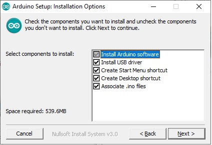
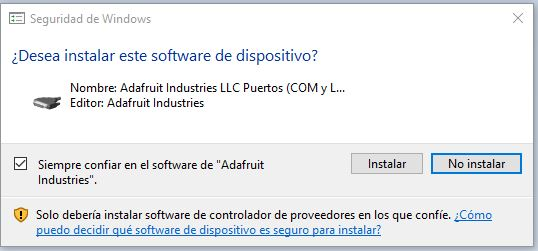
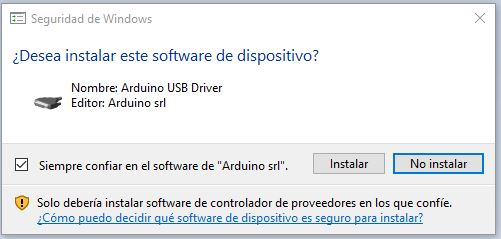
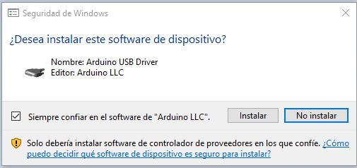
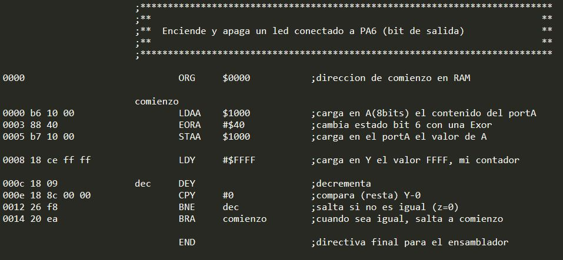
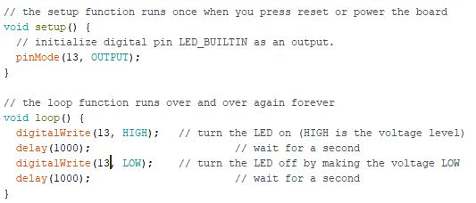
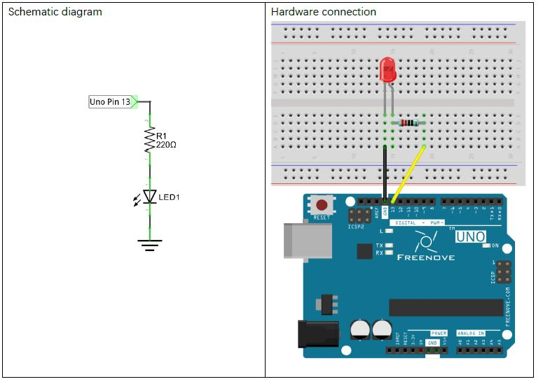
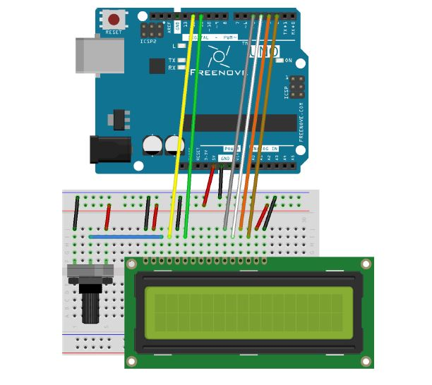

Instalación
El IDE de Arduino está disponible para varias plataformas: Windows, Linux y Mac. El proceso de instalación es sencillo:
   Comparativa con Ensamblador:
 Montajes:
Led parpadeante (en el pin 13)
Conexion de una pantalla LCD 1602
